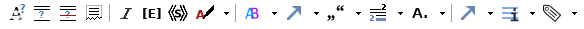
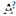
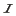
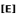
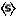
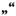
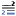
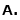

      Unsichere Lesarten
Wörter, die vom Herausgeber nicht eindeutig entziffert werden können, werden mit <unclear/> ausgezeichnet.
hätte ich wohl auch <unclear>gewünscht</unclear>, nur durch ein
Die so ausgezeichneten Wörter werden in der Autoransicht orange unterlegt.
Nicht lesbare Wörter
Nicht lesbare Wörter im Manuskript werden mit <gap/> ausgezeichnet. Im Attribut @quantity wird die Anzahl der (in Reihe) nicht lesbaren Wörter notiert. Das Attribut @unit gibt die „Einheit“ an, daher lautet sein Wert immer „Buchstaben“.
oft <gap quantity=“5“ unit=“Buchstaben“/>dann wieder
Bei durchgestrichenen Wörtern, die nicht entziffert werden können umschließt das Element <del/> das Element <gap/>.
oft <del rend=“durchgestrichen“> <gap quantity=“5“ unit=“Buchstaben“/></del>dann wieder
Beschädigte Stelle
Ergänzungen
Ausschreibungen im Manuskript abgekürzter Wörter werden mit<ex/> (expansion) ausgezeichnet. In der Autoransicht werden sie kursiv dargestellt.
Ihr langes Stillschweigen, bester S<ex>chleiermacher</ex>, läßt mich
Werden ganze Wörter durch den Herausgeber ergänzt, so werden diese mit <supplied/> gekennzeichnet.
ist die ehrwürdige <supplied cert=“high“>Mineralogie</supplied> ganz
Das Attribut @cert (certainty) gibt dabei Wahrscheinlichkeit an, mit der die Ergänzung zutrifft. Als Werte sind hier „low“ und „high“ möglich
Streichungen durch den Heruasgeber
Im Manuskript vorhandene redundante bzw. überflüssige Wörter oder Buchstaben können nach der Transkription mit <surplus>„gestrichen“, d.h. als überflüssig markiert werden.
<surplus prev=”ohne Ende”>unendlich</surplus>
Fehlendes Wort oder Satzzeichen (durch Herausgeber ergänzt)
Korrekturen durch den Herausgeber
Werden Schreibfehler des Autors im edierten Text korrigiert, so wird das Originalwort mit <sic/> und die Korrektur mit <corr/> ausgezeichnet; beides wird meinem <choice/> umschlossen.
inne wirst <choice><sic>daß</sic><corr cert=“low“>das</corr></choice> ich wahr rede
Im Element <corr/> wird durch das Attribut @cert – wie bei <supplied/> – die Wahrscheinlichkeit notiert, mit der die Korrektur zutrifft.
Varianten
Verweise
Übernahme
Anmerkung
Abkürzung
Verweise
Textstellen identifizieren
Namen kennzeichnen